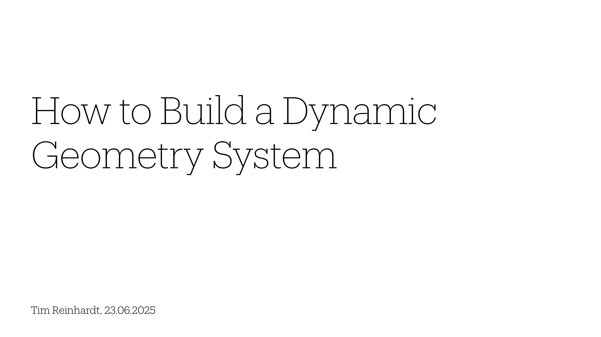
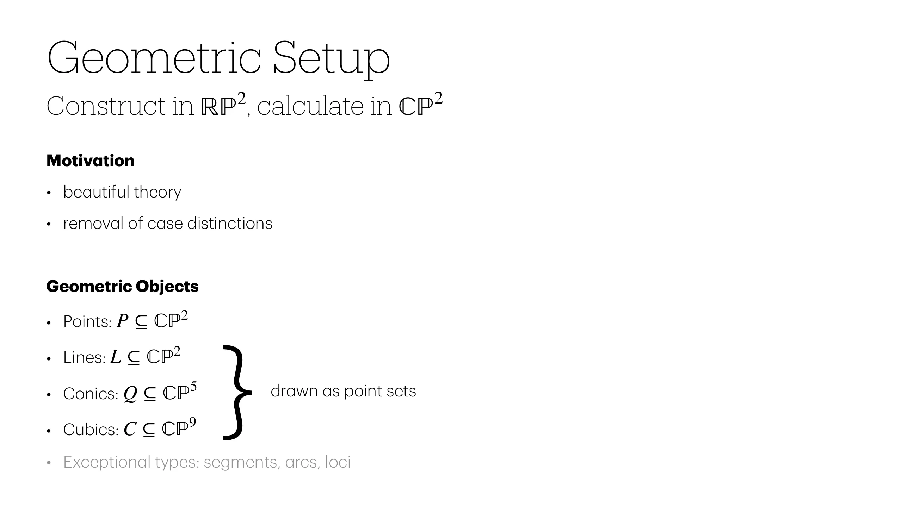
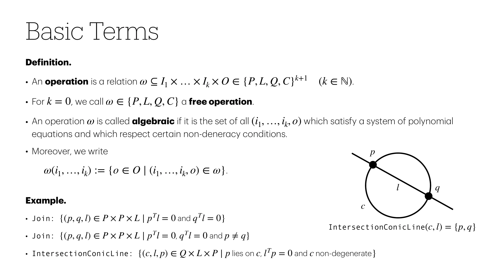
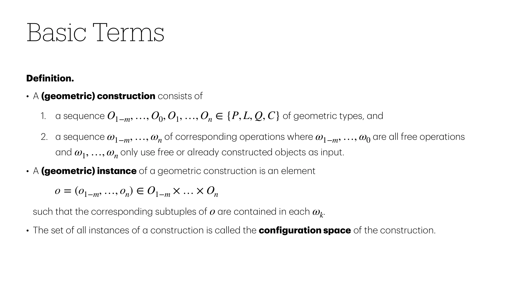
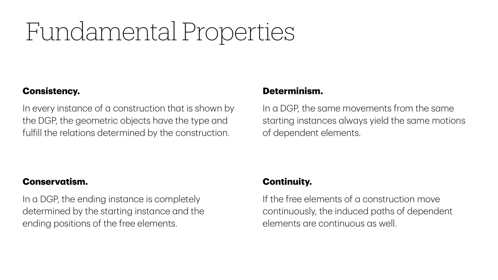
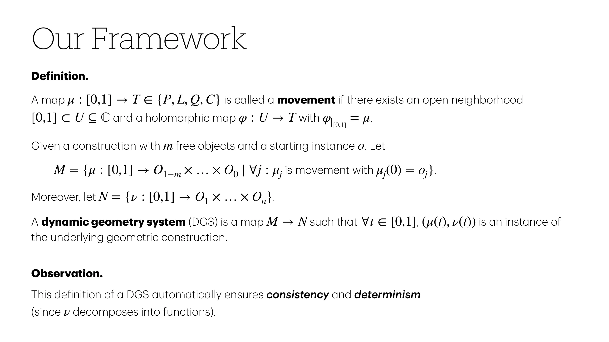
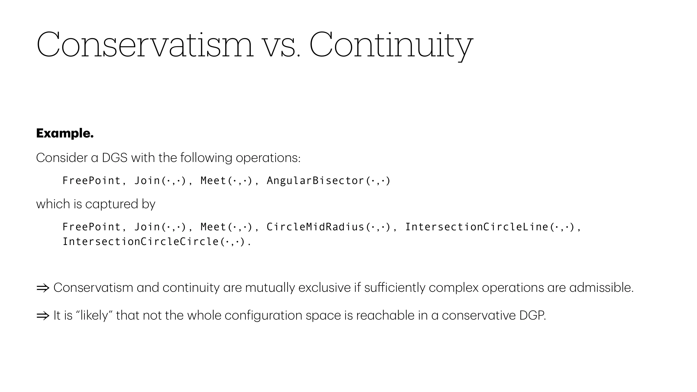
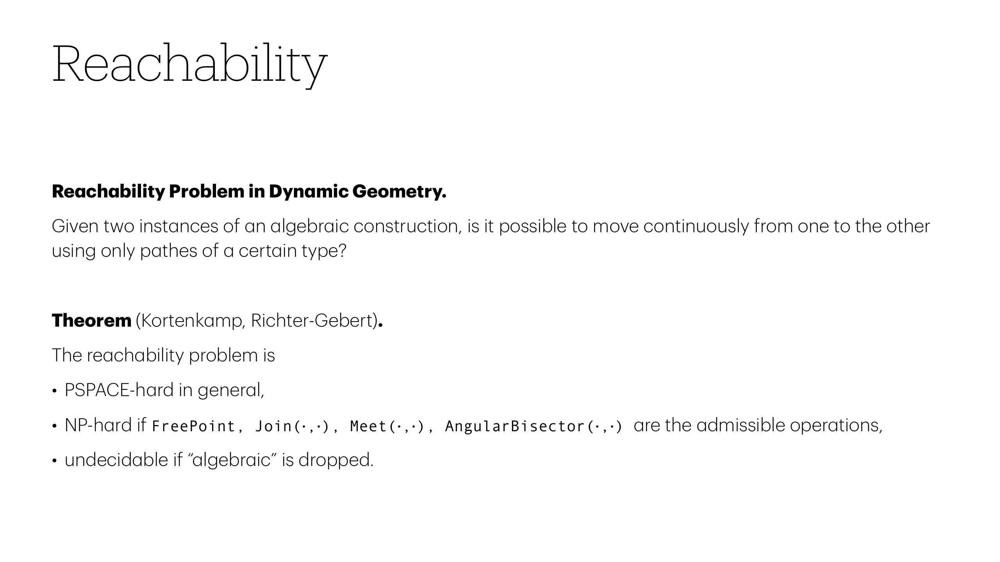
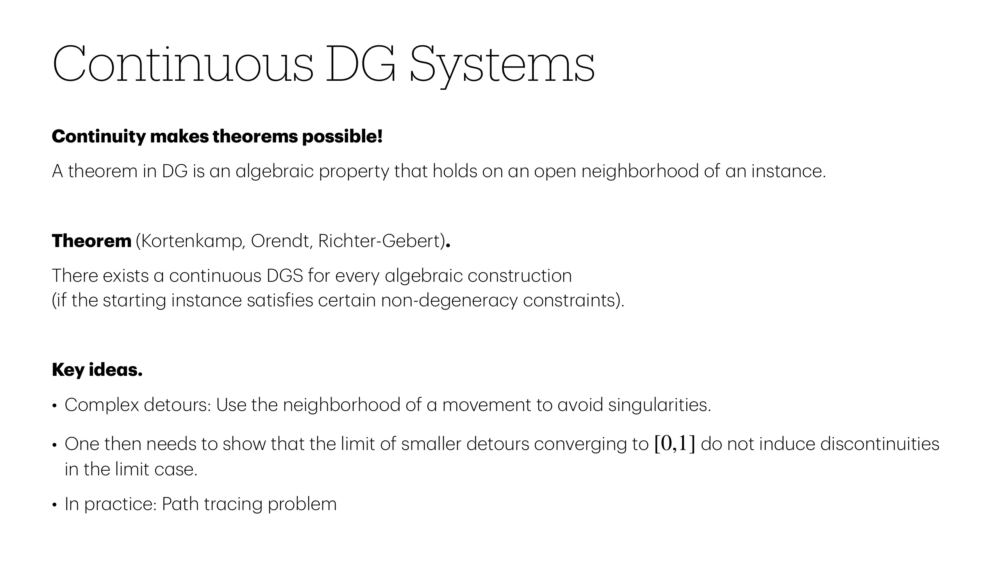

How to Build a Dynamic
Geometry System
Tim Reinhardt, 23.06.2025

Geometric Setup
2 2
Construct in ℝℙ , calculate in ℂℙ
Motivation
• beautiful theory
• removal of case distinctions
Geometric Objects
• Points: P ⊆ ℂℙ
• Lines: L ⊆ ℂℙ
5 drawn as point sets
• Conics: Q ⊆ ℂℙ }
• Cubics: C ⊆ ℂℙ
• Exceptional types: segments, arcs, loci

Basic Terms
Definition.
• An operation is a relation ω ⊆ I × … × I × O ∈ {P,L,Q,C}k+1 (k ∈ ℕ).
1 k
• For k = 0, we call ω ∈ {P,L,Q,C} a free operation.
• An operation ω is called algebraic if it is the set of all (i ,…,i ,o) which satisfy a system of polynomial
1 k
equations and which respect certain non-deneracy conditions.
• Moreover, we write p
ω(i ,…,i ) := {o ∈ O ∣ (i ,…,i ,o) ∈ ω}.
1 k 1 k
l q
Example. c
• Join: {(p,q,l) ∈ P × P × L ∣ pTl = 0 and qTl = 0}
Join: {(p,q,l) ∈ P ×P×L ∣ pTl = 0, qTl = 0 and p ≠ q} IntersectionConicLine(c,l) = {p,q}
•
• IntersectionConicLine: {(c,l,p) ∈ Q×L×P ∣ p lies on c, lTp = 0 and c non-degenerate}

Basic Terms
Definition.
• A (geometric) construction consists of
1. a sequence O , …,O ,O ,…,O ∈ {P,L,Q,C} of geometric types, and
1−m 0 1 n
2. a sequence ω , …,ω of corresponding operations where ω , …,ω are all free operations
1−m n 1−m 0
and ω ,…,ω only use free or already constructed objects as input.
1 n
• A (geometric) instance of a geometric construction is an element
o = (o , …,o ) ∈ O ×…×O
1−m n 1−m n
such that the corresponding subtuples of o are contained in each ω .
k
• The set of all instances of a construction is called the configuration space of the construction.

Fundamental Properties
Consistency. Determinism.
In every instance of a construction that is shown by In a DGP, the same movements from the same
the DGP, the geometric objects have the type and starting instances always yield the same motions
fulfill the relations determined by the construction. of dependent elements.
Conservatism. Continuity.
In a DGP, the ending instance is completely If the free elements of a construction move
determined by the starting instance and the continuously, the induced paths of dependent
ending positions of the free elements. elements are continuous as well.

Our Framework
Definition.
A map μ : [0,1] → T ∈ {P,L,Q,C} is called a movement if there exists an open neighborhood
[0,1] ⊂ U ⊆ ℂ and a holomorphic map φ : U → T with φ =μ.
∣[0,1]
Given a construction with m free objects and a starting instance o. Let
M={μ:[0,1]→O ×…×O ∣∀j:μ is movement with μ(0) = o}.
1−m 0 j j j
Moreover, let N = {ν : [0,1] → O × … × O }.
1 n
A dynamic geometry system (DGS) is a map M → N such that ∀t ∈ [0,1], (μ(t),ν(t)) is an instance of
the underlying geometric construction.
Observation.
This definition of a DGS automatically ensures consistency and determinism
(since ν decomposes into functions).

Conservatism vs. Continuity
Example.
Consider a DGS with the following operations:
FreePoint, Join(⋅,⋅), Meet(⋅,⋅), AngularBisector(⋅,⋅)
which is captured by
FreePoint, Join(⋅,⋅), Meet(⋅,⋅), CircleMidRadius(⋅,⋅), IntersectionCircleLine(⋅,⋅),
IntersectionCircleCircle(⋅,⋅).
⇒ Conservatism and continuity are mutually exclusive if sufficiently complex operations are admissible.
⇒ It is “likely” that not the whole configuration space is reachable in a conservative DGP.

Reachability
Reachability Problem in Dynamic Geometry.
Given two instances of an algebraic construction, is it possible to move continuously from one to the other
using only pathes of a certain type?
Theorem (Kortenkamp, Richter-Gebert).
The reachability problem is
• PSPACE-hard in general,
• NP-hard if FreePoint, Join(⋅,⋅), Meet(⋅,⋅), AngularBisector(⋅,⋅) are the admissible operations,
• undecidable if “algebraic” is dropped.

Continuous DG Systems
Continuity makes theorems possible!
A theorem in DG is an algebraic property that holds on an open neighborhood of an instance.
Theorem (Kortenkamp, Orendt, Richter-Gebert).
There exists a continuous DGS for every algebraic construction
(if the starting instance satisfies certain non-degeneracy constraints).
Key ideas.
• Complex detours: Use the neighborhood of a movement to avoid singularities.
• One then needs to show that the limit of smaller detours converging to [0,1] do not induce discontinuities
in the limit case.
• In practice: Path tracing problem